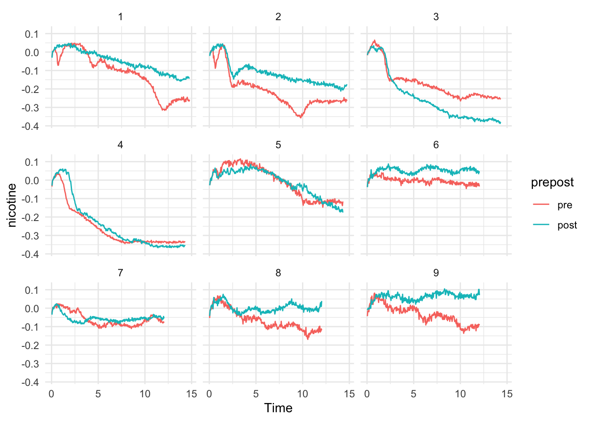
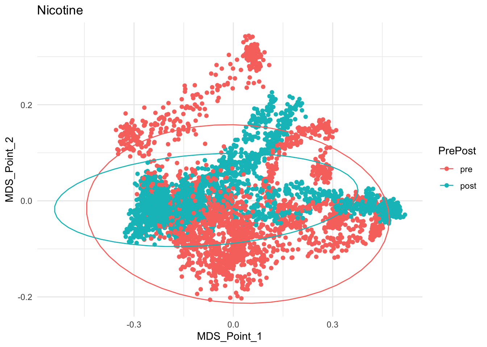

This project is analyzing data obtained from Dr Dani Taylor. The expiriment is testing how a bee brain reacts to nicotine and a specific odor after the bee has been admisnistered octopamine.
The following graphs are an overview of the data.

When I received the data it was in .pzfz format. To read it to r I used the pzfx package.
library(pzfx)It was in multiple files in multiple tables so I used the following code to upload it.
#i is used to assign a number to each bee
i=0
#read in first dataset
tabs = pzfx_tables("./data/NON_11-08-11.pzfx")
for(Table in tabs){
i=i+1
if(Table == tabs[1]){
df = cbind(Bee=i, Date="11-08-11", Table,
read_pzfx("./data/NON_11-08-11.pzfx", table=Table))
}
else{
df = rbind(df, cbind(Bee=i, Date="11-08-11", Table,
read_pzfx("./data/NON_11-08-11.pzfx", table=Table)))
}
}
#read in second dataset
tabs = pzfx_tables("./data/NON_11-22-11.pzfx")
for(Table in tabs){
i=i+1
df = rbind(df, cbind(Bee=i, Date="11-22-11", Table,
read_pzfx("./data/NON_11-22-11.pzfx", table=Table)))
}
#read in third dataset
tabs = pzfx_tables("./data/NON_1-11-12.pzfx")
for(Table in tabs){
i=i+1
df = rbind(df, cbind(Bee=i, Date="1-11-12", Table,
read_pzfx("./data/NON_1-11-12.pzfx", table=Table)))
}
rm(tabs, Table, i)After I succesfully read in the data made some corrections and cleaned up the data as follows
#Time in seconds
names(df)[4] = "Time"
names(df)[16] = "o3"
names(df)[8] = "nicotine"
names(df)[21] = "nicotine"
names(df)[12] = "odor"
names(df)[17] = "odor"
#fix averages
df[8] = rowMeans(df[5:7])
df[12] = rowMeans(df[9:11])
df[17] = rowMeans(df[14:16])
df[21] = rowMeans(df[18:20])
#prepost nicodor mod
dfn = rbind(cbind(df[,-c(9:12,14:17,18:21)], prepost="pre"), cbind(df[,-c(5:8,9:12,14:17)], prepost="post"))
dfo = rbind(cbind(df[,-c(5:8,14:17,18:21)], prepost="pre"), cbind(df[,-c(5:8,9:12,18:21)], prepost="post"))
dfn = dfn[order(dfn$Bee),]
dfo = dfo[order(dfo$Bee),]
dfn = dfn[complete.cases(dfn),]
dfo = dfo[complete.cases(dfo),]To analyze this data I used the vegan pacakge.
library(vegan)## Loading required package: permute## Loading required package: lattice## This is vegan 2.5-6I used both metaMDS and adonis to determine the relationship between how the bee brain reacted prior to the octopamine and after.
NMDS = metaMDS(dfn[5:7],k = 2,distance = "euclidean",na.rm = TRUE) #k=3 third axis
OMDS = metaMDS(dfo[5:7],k = 2,distance = "euclidean",na.rm = TRUE)
ndist = vegdist(dfn[5:7], method = "euclidean")
odist = vegdist(dfo[5:7], method = "euclidean")
nadonis = adonis(ndist ~ dfn$prepost)
oadonis = adonis(odist ~ dfo$prepost)First let’s review the results of the permanova we obtained through adonis.
nadonis##
## Call:
## adonis(formula = ndist ~ dfn$prepost)
##
## Permutation: free
## Number of permutations: 999
##
## Terms added sequentially (first to last)
##
## Df SumsOfSqs MeanSqs F.Model R2 Pr(>F)
## dfn$prepost 1 6.254 6.2544 115.59 0.02096 0.001 ***
## Residuals 5398 292.089 0.0541 0.97904
## Total 5399 298.343 1.00000
## ---
## Signif. codes: 0 '***' 0.001 '**' 0.01 '*' 0.05 '.' 0.1 ' ' 1oadonis##
## Call:
## adonis(formula = odist ~ dfo$prepost)
##
## Permutation: free
## Number of permutations: 999
##
## Terms added sequentially (first to last)
##
## Df SumsOfSqs MeanSqs F.Model R2 Pr(>F)
## dfo$prepost 1 0.470 0.46969 25.511 0.01122 0.001 ***
## Residuals 2248 41.389 0.01841 0.98878
## Total 2249 41.859 1.00000
## ---
## Signif. codes: 0 '***' 0.001 '**' 0.01 '*' 0.05 '.' 0.1 ' ' 1As we can see the permanova showed that the octopamine administration could only show 1-2 percent of the varience. The following is the data from the metaMDS. First the stressplots from the nicotine dataset then the odor dataset.
stressplot(NMDS)stressplot(OMDS)Now we will plot the two points from the MDS.
data.frame(MDS_Point_1=NMDS$points[,1],MDS_Point_2=NMDS$points[,2],PrePost = dfn$prepost) %>%
ggplot(aes(x=MDS_Point_1,y=MDS_Point_2,color=PrePost))+
geom_point()+
stat_ellipse()+
ggtitle("Nicotine")
data.frame(MDS_Point_1=OMDS$points[,1],MDS_Point_2=OMDS$points[,2],PrePost = dfo$prepost) %>%
ggplot(aes(x=MDS_Point_1,y=MDS_Point_2,color=PrePost))+
geom_point()+
stat_ellipse()+
ggtitle("Odor")+
xlim(-0.2, 0.2)+
ylim(-0.2, 0.2)There is a lot of overlap but the permanova showed that there was a difference.
The permanova was able to show that the octopamine had an impact on the results but with a R^2 of 1-2 percent it isn’t nearly as impactful as the graphs at the top show. I plan on using another package such as ARIMA to analyze the data. ARIMA will be nice because we are processing a time series.
Thanks again to Dr Dani Taylor for providing the data.